Marfa Light
Every token is a working clock for Marfa, Texas. The hash chooses the clock, how it is made, where it stands, the weather, the film it is shot on, and what is hidden around it. The sun, the moon, and the stars are computed for Marfa and for the minute you are looking.
One JavaScript file on three.js r124, the version Art Blocks stores onchain. Textures are computed, relics are sculpted in Blender and packed into the file, and nothing loads from anywhere else.
Every kind of clock
One token of each kind, at a minute of April 17, 2027, inside the residency. Select one to bring it up live.
Twenty-four draws
Random hashes, straight from the generator. No two share their full set of traits.
Seven films
Every token is shot on one film stock. Here is one token on all seven. Press F on any token to try the others.
The generative layer
Every token carries all nine of these, drawn from their own part of the hash, whatever the clock and the place. The sky events only appear when the real sky allows them: a rainbow needs a monsoon and a low sun behind you, sun dogs sit 22° from the sun, meteors wait for full dark.
Look closer
Every token hides between two and seven of these. Click one in the scene to read about it.
Where they stand
Behind every place, the real skyline: the Davis Mountains to the north, the Chinati Mountains to the southwest, the Sierra Vieja to the west.
Where the light model started
Memories, my open source onchain renderer system: 612 deterministic drawing programs in 87 families. The first five are drawn for Marfa's coordinates on April 17, 2027. The last seven are SIGNAL, screen-native abstracts from the same catalog. The sun model and the Blossom grid in Marfa Light both came from here.
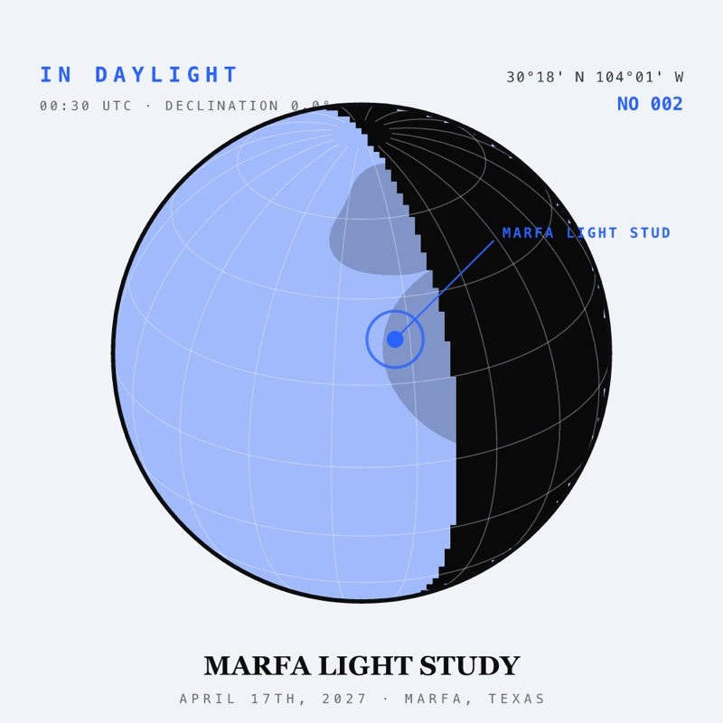
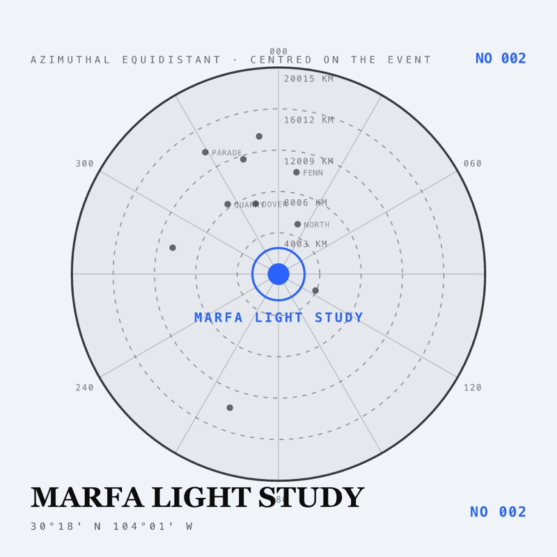
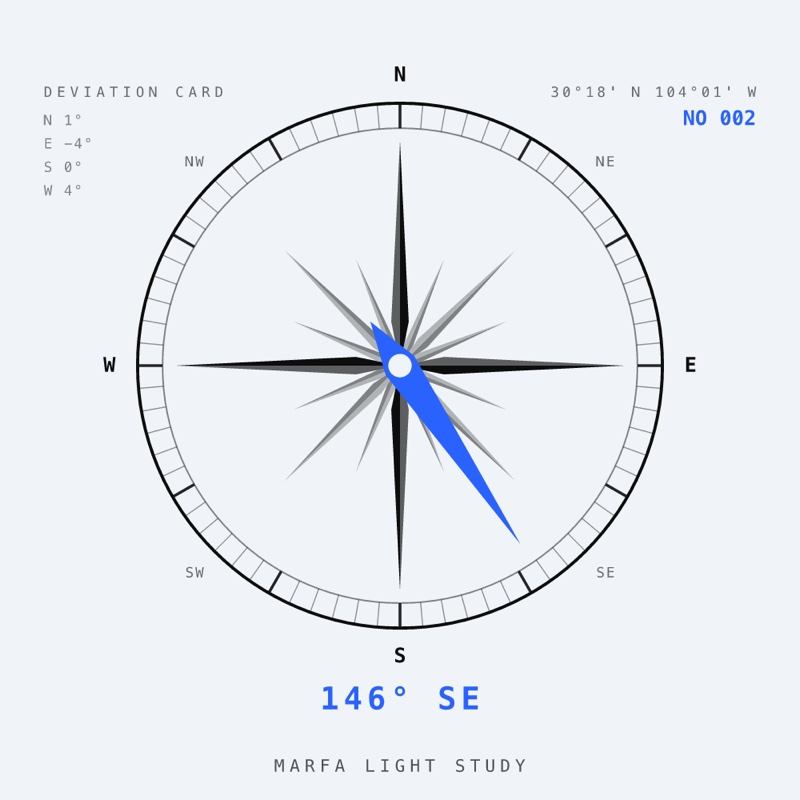
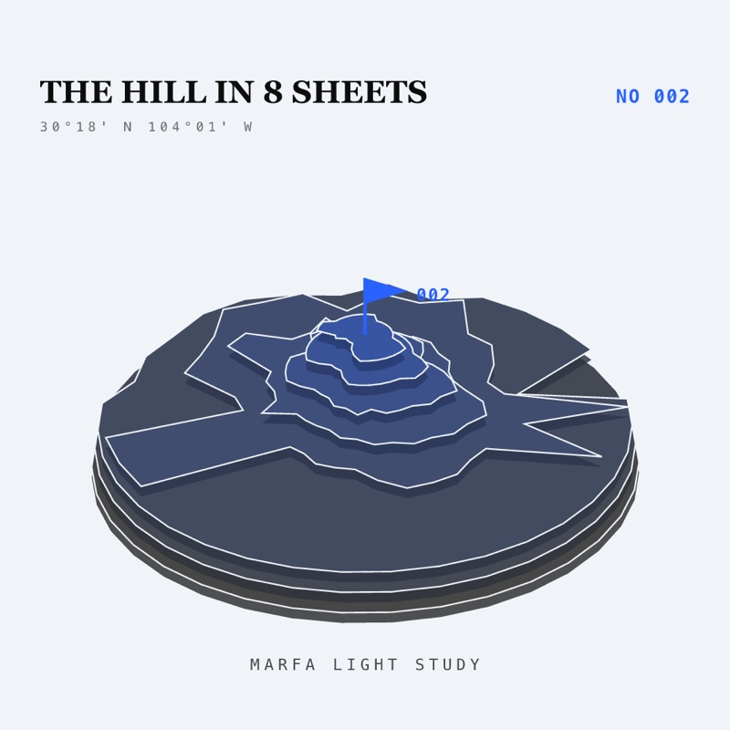
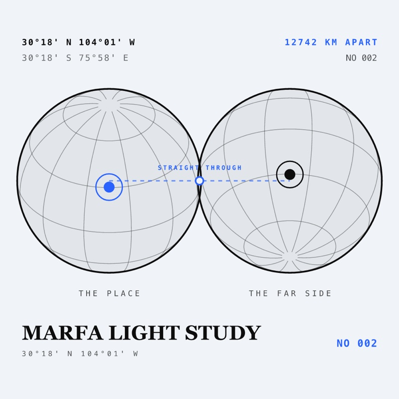
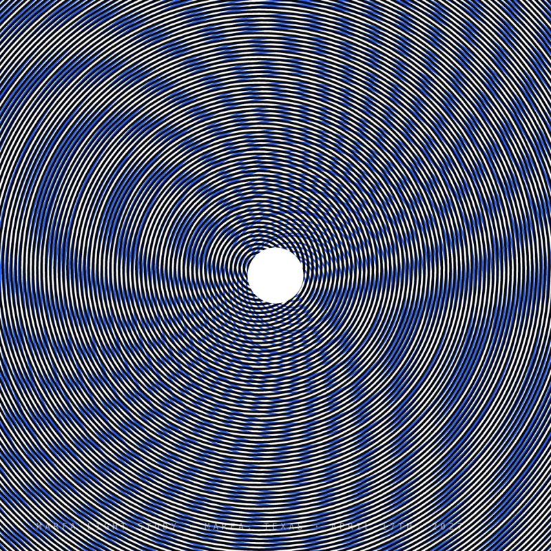
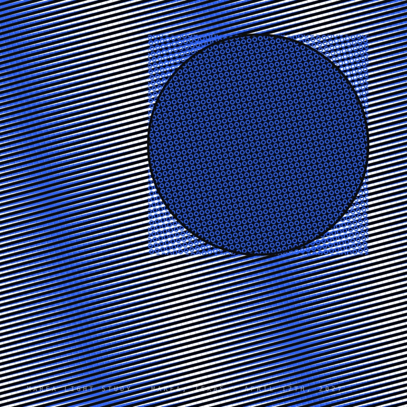
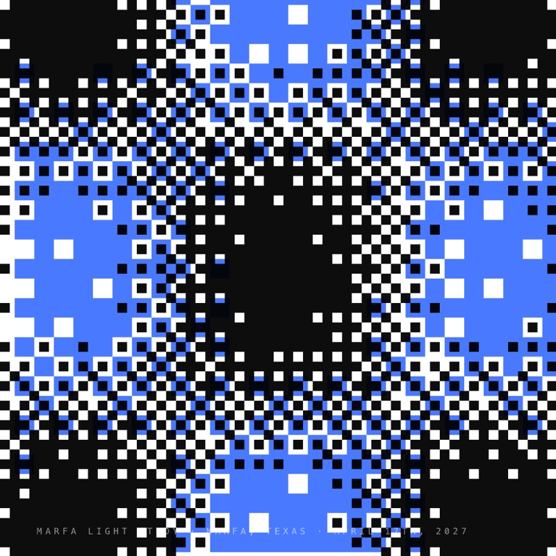
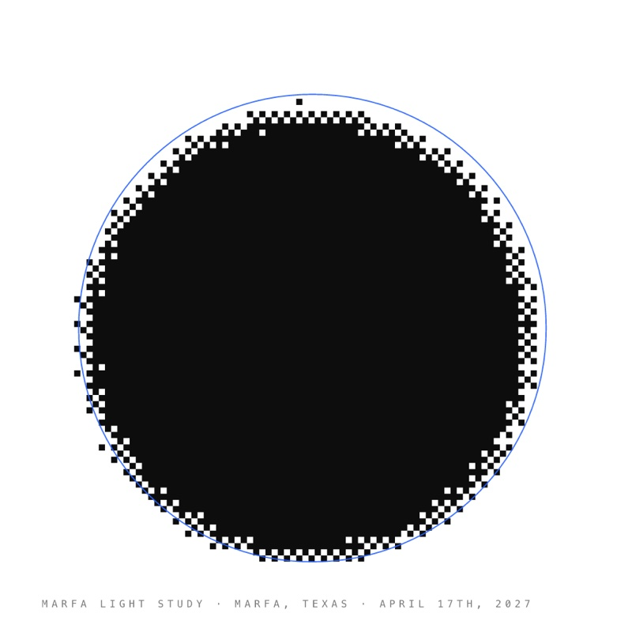
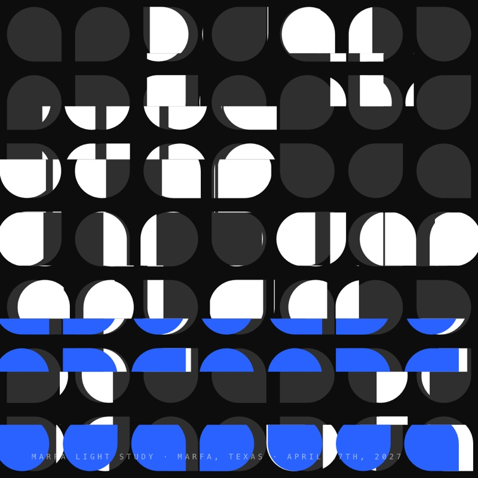
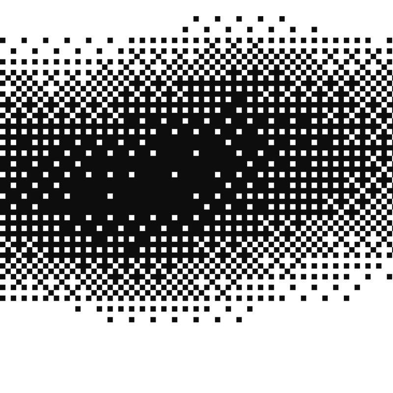
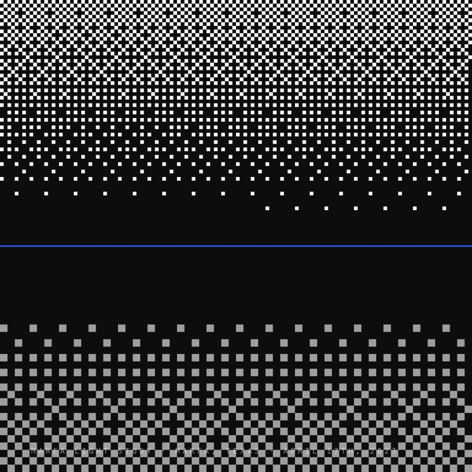
What is computed, and what is not yet
Four weeks in Marfa move items from the second and third columns into the first.
Computed
- Sun position, rise and set, for any minute
- Moon position, phase, rise and set
- Stars turned by sidereal time, the galaxy included
- Sundial hour lines for latitude 30.3° and Marfa's longitude
- The equation of time, as a noon mark some dials carry: a figure eight traced by the sun
- Central Time and daylight saving
- Real shadows, by sun or by moon
- The season, for the flowers
Set by eye
- Sky colours at each elevation
- Ground and mountain colours
- Exposure as the light drops
- The seven film stocks
Not yet
- Shadow edges checked against a real gnomon
- Volumetric cloud and haze
- Light bounced between objects, outside Blender
- Measured sky colour from the casita